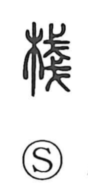

桟

Uncategorized
Kun: tana, kakehashi | On: san
crosspiece ・ frame ・ plank bridge ・ shelf
Explanation
桟 is a phono-semantic character whose original form is 棧, combining the wood element with the phonetic 戔 (san). 戔 depicts pikes stacked up, and by extension conveys the ideas of piling thin things and laying them in rows. With 木, this yields structures made by arranging boards in series—shelves and plank bridges. The same phonetic underlies 浅(淺), where the notion of thinness shifts to the shallowness of water. Classical poetry preserves this sense: in Li Bai’s Shu Dao Nan appears the phrase ‘heaven’s ladder, stone zhan’ (天梯石棧), evoking cliffside plankways and even bridges built of stone. The phonetic thus marks the on-reading san while guiding the character’s imagery of things laid out in tiers.